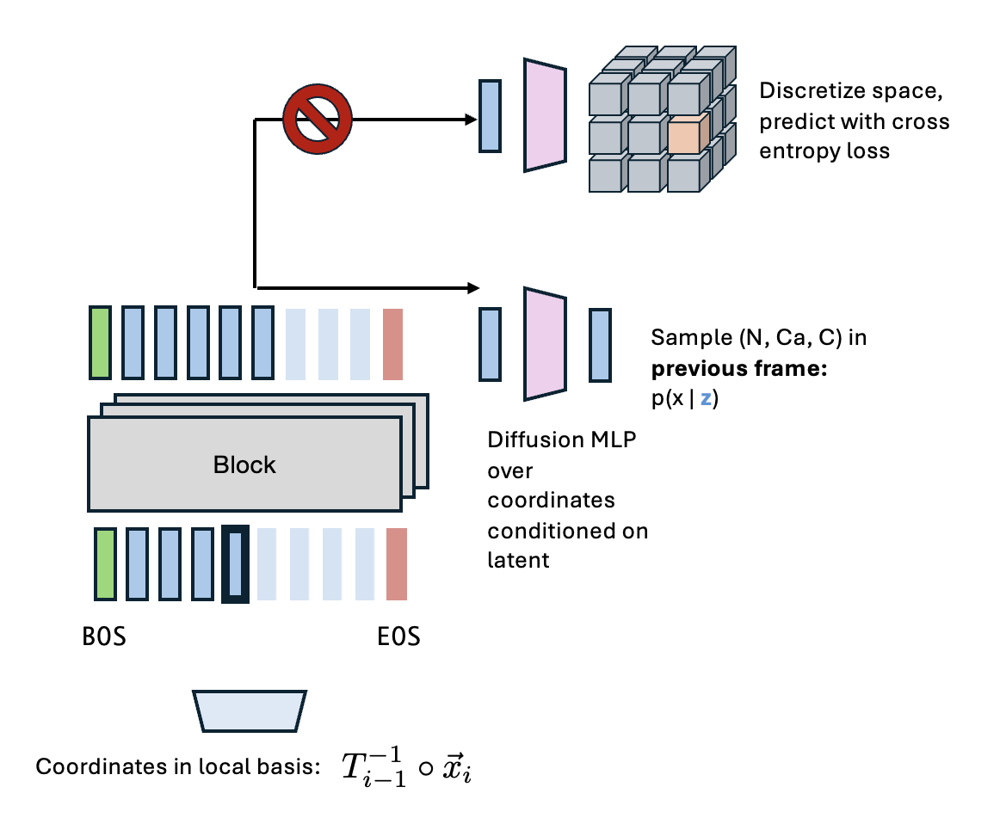
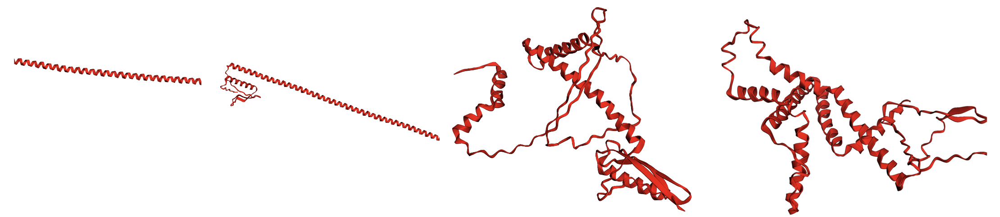

Everyone acknowledges that negative results are useful, but there's nowhere really to publish negative results. Proceedings of Dead Ends is my place to put short summaries of ideas I attempted that ultimately went nowhere. Hopefully it's helpful for anyone thinking in similar directions!
I've been interested in autoregressive models to generate biological structures. There are a variety of reasons to prefer autoregression to discrete or continuous diffusion. One big one is variable-length sequences. Almost everything that isn't an image has a variable sequence length (audio, video, proteins, sentences, time series, etc.), and the sequence length is often actually important to the task at hand. Fixing the sequence length and generating using a predefined template may help with doing well on benchmarks, but I think the bill comes due in the wild. A more evocative view is we want to build truly multimodal models that can perceive biology using a variety of signals, and having to say "okay but the protein is 67 residues long" is a very constraining.
One thing I wanted to do was get rid of tokenization because it isn't obvious to me that it's actually necessary. The original argument in favor of tokenization was for images, where we don't have to model an $H\times W$ length sequence if we tokenize because we downsample and pool local information. We don't do any downsampling for proteins because we don't need to, and also context windows are really long now anyways, so why bother? The real reason is because it's a standard, well formulated way to train autoregressive models. Tokenized models in biology have all kinds of problems though. They've historically been tricky to train (though I no longer think this is still true if you use a diffusion loss) and underperform continuous models.
My idea was basically to train an autoregressive model "in the previous reference frame." Here's the rough algorithm:
- AR model predicts a latent $c$.
- Lightweight diffusion model produces backbone atoms: $x_N, x_{CA}, x_C = f_\text{diffusion}(c, \epsilon)$, with $\epsilon\sim\mathcal{N}(0, 1), \epsilon\in\mathbb{R}^{3\times 3}$.
- These three atoms define a frame via Gram-Schmidt orthogonalization: $T_i = \text{gs}(x_{CA} - x_N, x_C - x_{CA})$.
- Now predict the next three atoms in reference frame $T_i$.

You can see that iteratively performing this procedure would mean the diffusion module never has to deal with widely varying length scales (since everything is in the previous reference frame), but you also avoid the weaknesses of rotational diffusion processes (they're annoying to train and scale). The use of a "canonical" reference frame means that in principle we get the benefits of invariance/equivariance without needing those nasty SO(3) diffusion processes. The downside of this approach from the get-go is you can't do nice teacher-forcing/sliding window tricks to get this to work, so you're getting a pretty small signal for each element in a batch.
Now, we tried a variety of approaches; the main one (that didn't lead to steric clashes, where part of a protein intersects with another) was where, when predicting coordinates $i$, all other coordinates are in the reference frame defined by coordinate $i-1$. That means coordinates $1, 2, ..., i-2, i-1$ are all in reference frame $i-1$.
The whole process is pretty simple in principle. You just keep generating new structural points and moving along the chain, with everything in your new reference frame. To be fair, changing reference frames is pretty cheap to parallelize on a GPU (a bunch of matrix multiplications), so the idea isn't totally crazy. It also has some nice aesthetic properties; for instance, it looks a lot like a ribosome moving along a protein chain and adding an amino acid.
None of that matters because this method didn't work. It produced vaguely reasonable-ish things, like alpha helices and the occasional beta sheet, but it never really produced anything that passed designability filters. I've been a critique of designability as a metric, but you should be able to do better than 5-6%! Here are some samples at varying temperatures (higher to the right)

Again, we can kind of see some alpha helices and beta sheets, but it's not great.
I don't think there's anything stopping this from working in the infinite data limit, but I think the main problem is the error accumulation. When you tokenize, even if you predict the wrong token, you have a giant fat decoder between your tokens and your protein that gets a chance to "rescue" any bad positions. That isn't the case here; once you put the atoms in the wrong positions, that's it, they're done. So you have much more exposure to error accumulation than other models. I've observed this elsewhere (mostly in conditional design tasks), but this was the observation that really changed my mind on tokenization and the issues it can present. There are some approaches I considered that could solve this problem. For instance, you could imagine a refiner diffusion model whose job was to fix errors at each step via a small number of diffusion steps. That adds a lot on the inference side, and on the whole this approach wasn't promising enough for it to be worth it.